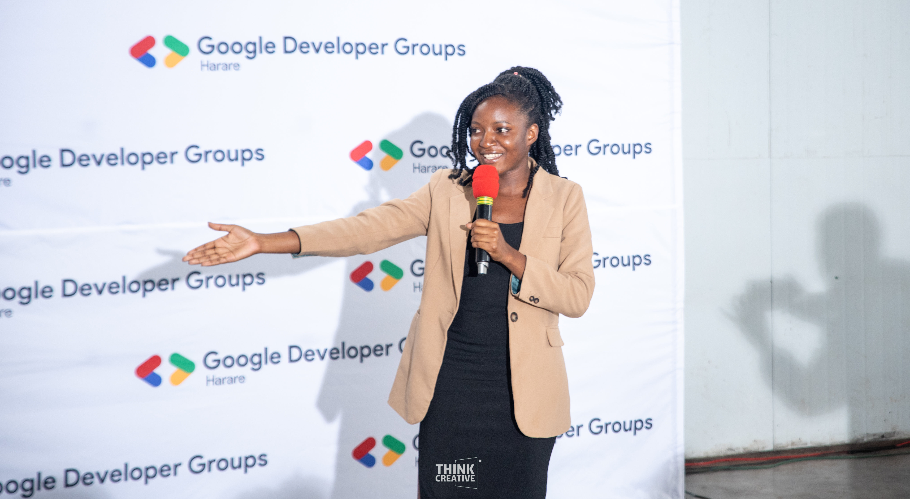
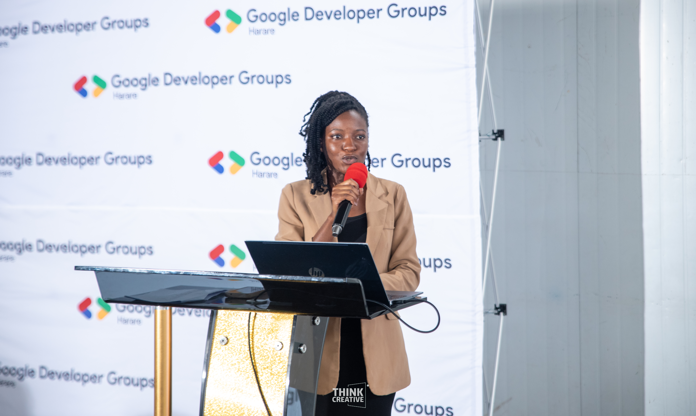
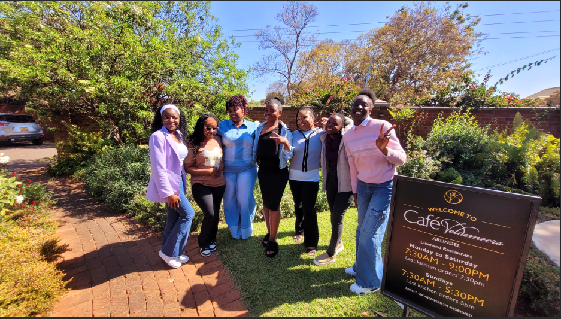
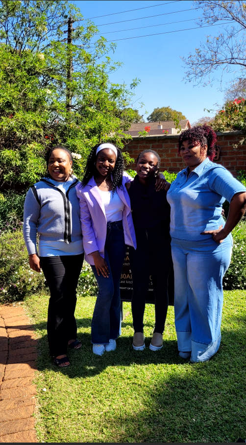

Women
in technology.
Women Techmakers Ambassador
Google Women TechmakersI support initiatives that encourage women’s participation in technology through technical learning, networking, mentorship, and professional growth.
Beyond software, I support spaces where women
learn, connect, and build—and explore how technology
can address challenges in our communities.
I support initiatives that encourage women’s participation in technology through technical learning, networking, mentorship, and professional growth.
I’m developing an environmental innovation project focused on sustainable water management for small-scale farmers, using research and technology-driven approaches to address water scarcity.
I support a growing community of women entrepreneurs through networking events, founder engagement, and initiatives that encourage collaboration, knowledge-sharing, and business growth.
My speaker experience with the Google Developer Groups Harare community.


Connecting women entrepreneurs through my Female Founders Breakfast initiatives in Harare.


Have an opportunity to collaborate in technology, community, or environmental innovation? I’d love to hear about it.
Get in touch